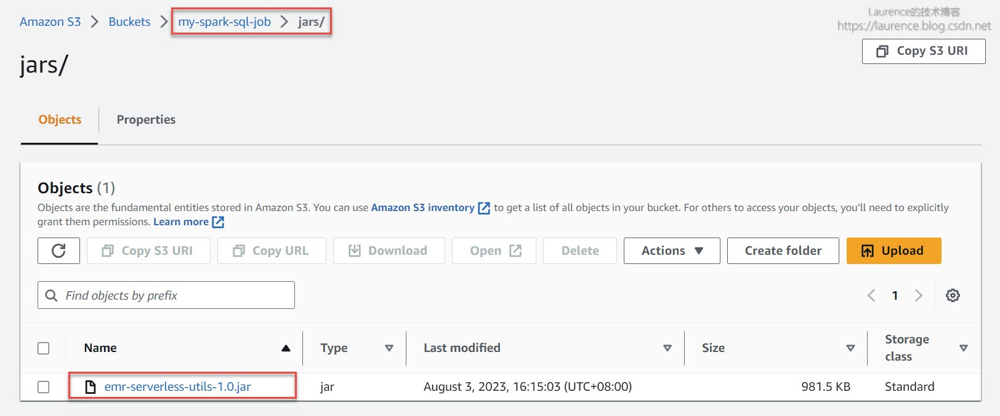
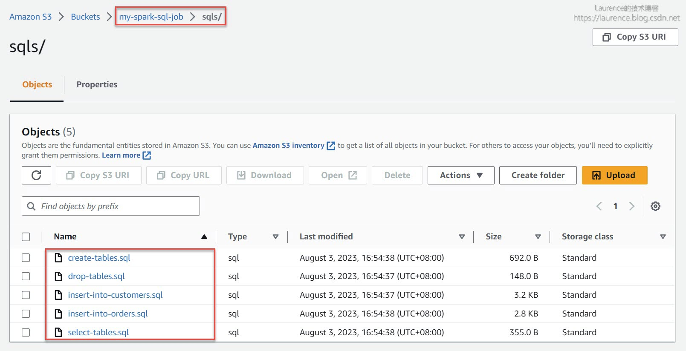
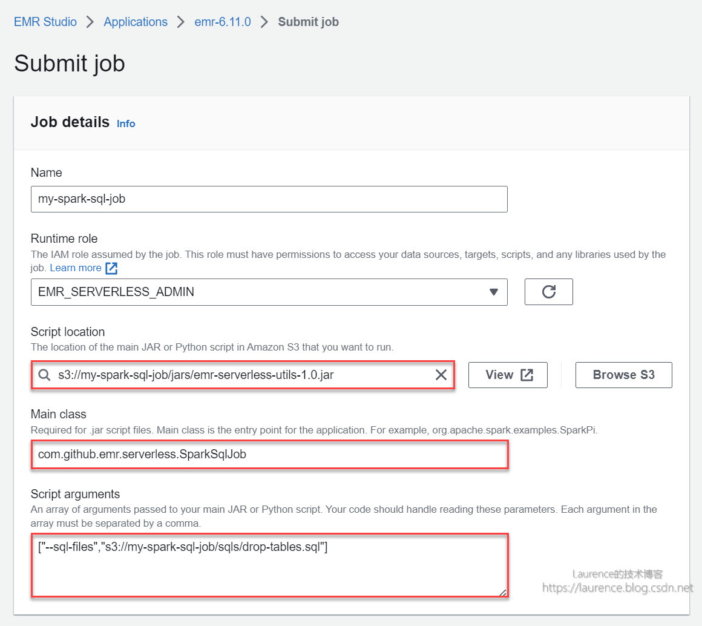
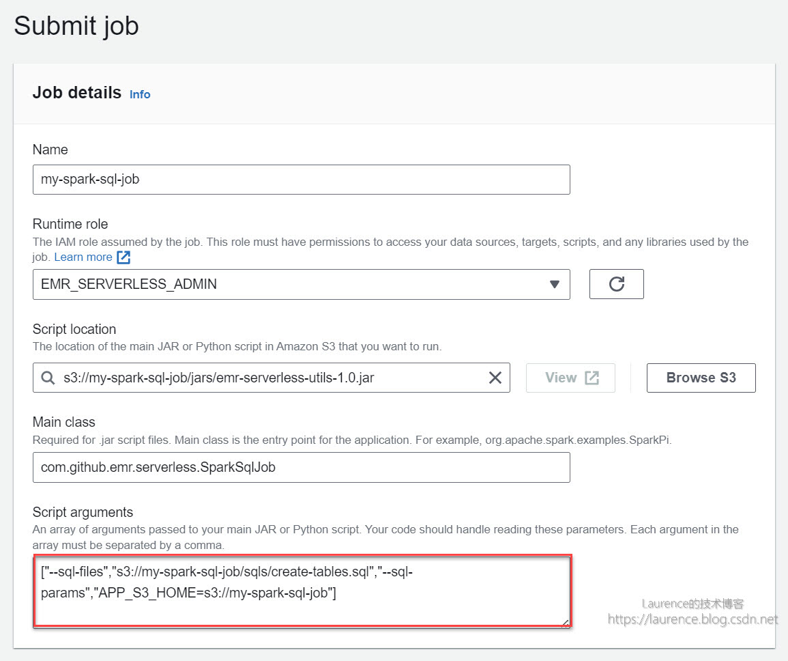
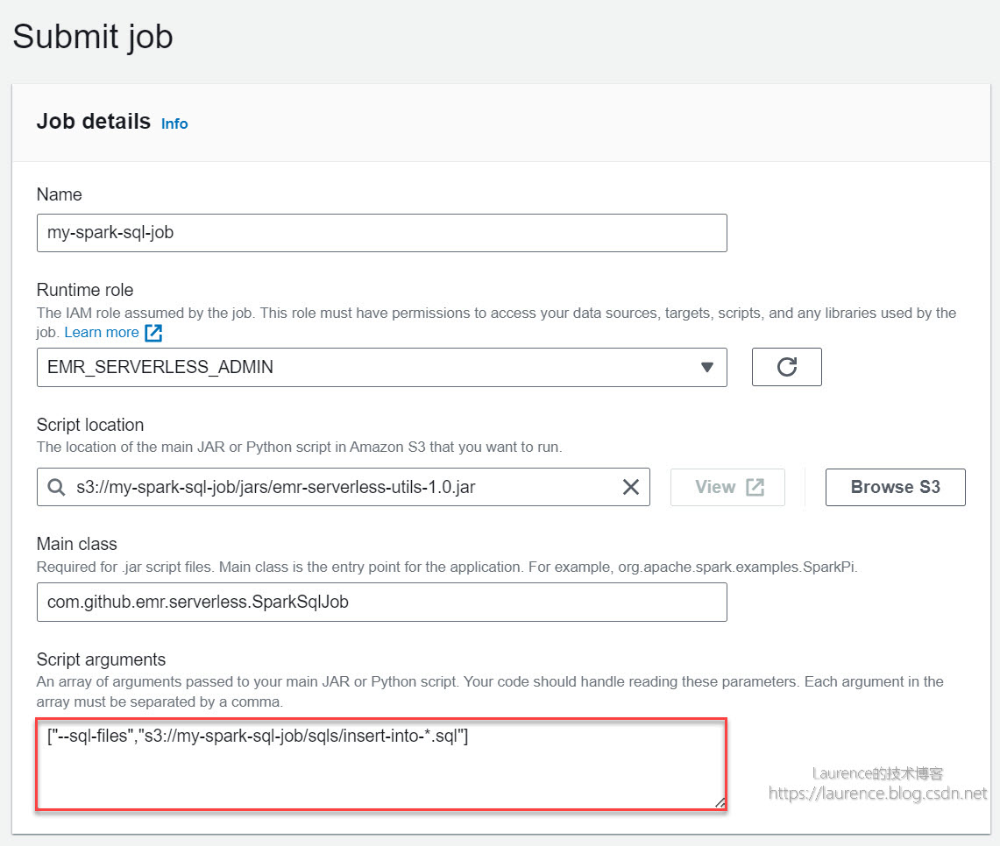

解决方案：如何在 Amazon EMR Serverless 上执行纯 SQL 文件？
长久已来，SQL以其简单易用、开发效率高等优势一直是ETL的首选编程语言，在构建数据仓库和数据湖的过程中发挥着不可替代的作用。Hive和Spark SQL也正是立足于这一点，才在今天的大数据生态中牢牢占据着主力位置。在常规的Spark环境中，开发者可以使用 spark-sql 命令直接执行SQL文件，这是一项看似平平无奇实则非常重要的功能：一方面，这一方式极大地降低了Spark的使用门槛，用户只要会写SQL就可以使用Spark；另一方面，通过命令行驱动SQL文件的执行可以极大简化SQL作业的提交工作，使得作业提交本身被“代码化”，为大规模工程开发和自动化部署提供了便利。
但遗憾的是，Amazon EMR Serverless 未能针对执行SQL文件提供原生支持，用户只能在Scala/ Python代码 中嵌入SQL语句，这对于倚重纯SQL开发数仓或数据湖的用户来说并不友好。为此，我们专门开发了一组用于读取、解析和执行SQL文件的工具类，借助这组工具类，用户可以在 Amazon EMR Serverless 上直接执行SQL文件，本文将详细介绍一下这一方案。
1. 方案设计
鉴于在Spark编程环境中执行SQL语句的方法是： spark.sql("...") ，我们可以设计一个通用的作业类，该类在启动时会根据传入的参数读取指定位置上的SQL文件，然后拆分成单条SQL并调用 spark.sql("...") 执行。为了让作业类更加灵活和通用，还可以引入通配符一次加载并执行多个SQL文件。此外，ETL作业经常需要根据作业调度工具生成的时间参数去执行相应的批次，这些参数同样会作用到SQL中，所以，作业类还应允许用户在SQL文件中嵌入自定义变量，并在提交作业时以参数形式为自定义变量赋值。基于这种设计思路，我们开发了一个项目，实现了上述功能，项目地址为：
| 项目名称 | 项目地址 |
|---|---|
| Amazon EMR Serverless Utilities | https://github.com/bluishglc/emr-serverless-utils |
项目中的 com.github.emr.serverless.SparkSqlJob 类即为通用的SQL作业类，该类接受两个可选参数，分别是：
| 参数 | 说明 | 取值示例 |
|---|---|---|
| –sql-files | 指定要执行的SQL文件路径，支持 Java文件系统通配符 ，可指定多个文件一起执行 | s3://my-spark-sql-job/sqls/insert-into-*.sql |
| –sql-params | 以 K1=V1,K2=V2,... 形式为SQL文件中定义的 ${K1} , ${K2} ,…形式的变量设值 |
CUST_CITY=NEW YORK,ORD_DATE=2008-07-15 |
该方案具备如下特性：
① 允许单一SQL文件包含多条SQL语句
② 允许在SQL文件中使用 ${K1} , ${K2} ,…的形式定义变量，并在执行作业时使用 K1=V1,K2=V2,... 形式的参数进行变量赋值
③ 支持 Java文件系统通配符 ，可一次执行多个SQL文件
下面，我们将分别在AWS控制台和命令行两种环境下介绍并演示如何使用该项目的工具类提交纯SQL作业。
2. 实操演示
2.1. 环境准备
在EMR Serverless上提交作业时需要准备一个“EMR Serverless Application”和一个“EMR Serverless Job Execution Role”，其中后者应具有S3和Glue Data Catalog的读写权限。Application可以在EMR Serverless控制台（EMR Studio）上通过向导轻松创建（全默认配置即可），Execution Role可以使用 《CDC一键入湖：当 Apache Hudi DeltaStreamer 遇见 Serverless Spark》 一文第5节提供的脚本快速创建。
接下来要准备提交作业所需的Jar包和SQL文件。首先在S3上创建一个存储桶，本文使用的桶取名： my-spark-sql-job （当您在自己的环境中操作时请注意替换桶名），然后从 [ 此处 ] 下载编译好的 emr-serverless-utils.jar 包并上传至 s3://my-spark-sql-job/jars/ 目录下：

在演示过程中还将使用到5个SQL示例文件，从 [ 此处 ] 下载解压后上传至 s3://my-spark-sql-job/sqls/ 目录下：

2.2. 在控制台上提交纯SQL文件作业
2.2.1. 执行单一SQL文件
打开EMR Serverless的控制台（EMR Studio），在选定的EMR Serverless Application下提交一个如下的Job：

① Script location：设定为此前上传的Jar包路径 s3://my-spark-sql-job/jars/emr-serverless-utils-1.0.jar
② Main class：设定为 com.github.emr.serverless.SparkSqlJob
③ Script arguments：设定为 ["--sql-files","s3://my-spark-sql-job/sqls/drop-tables.sql"]
至于其他选项，无需特别设定，保持默认配置即可，对于在生产环境中部署的作业，您可以结合自身作业的需要灵活配置，例如Spark Driver/Executor的资源分配等。需要提醒的是：通过控制台创建的作业默认会启用Glue Data Catalog（即：Additional settings -> Metastore configuration -> Use AWS Glue Data Catalog 默认是勾选的），为了方便在Glue和Athena中检查SQL脚本的执行结果，建议您不要修改此项默认配置。
上述配置描述了这样一项工作：以 s3://my-spark-sql-job/jars/emr-serverless-utils-1.0.jar 中的 com.github.emr.serverless.SparkSqlJob 作为主类，提起一个Spark作业。其中 ["--sql-files","s3://my-spark-sql-job/sqls/drop-tables.sql"] 是传递给 SparkSqlJob 的参数，用于告知作业所要执行的SQL文件位置。本次作业执行的SQL文件只有三条简单的DROP TABLE语句，是一个基础示例，用以展示工具类执行单一文件内多条SQL语句的能力。
2.2.2. 执行带自定义参数的SQL文件
接下来要演示的是工具类的第二项功能：执行带自定义参数的SQL文件。新建或直接复制上一个作业（在控制台上选定上一个作业，依次点击 Actions -> Clone job），然后将“Script arguments”的值设定为：
1 | ["--sql-files","s3://my-spark-sql-job/sqls/create-tables.sql","--sql-params","APP_S3_HOME=s3://my-spark-sql-job"] |
如下图所示：

这次的作业设定除了使用 --sql-files 参数指定了SQL文件外，还通过 --sql-params 参数为SQL中出现的用户自定义变量进行了赋值。根据此前的介绍， APP_S3_HOME=s3://my-spark-sql-job 是一个“Key=Value”字符串，其含义是将值 s3://my-spark-sql-job 赋予了变量 APP_S3_HOME ，SQL中所有出现 ${APP_S3_HOME} 的地方都将被 s3://my-spark-sql-job 所替代。查看 create-tables.sql 文件，在建表语句的LOCATION部分可以发现自定义变量 ${APP_S3_HOME} ：
1 | CREATE EXTERNAL TABLE IF NOT EXISTS ORDERS ( |
当 SparkSqlJob 读取该SQL文件时，会根据键值对字符串 APP_S3_HOME=s3://my-spark-sql-job 将SQL文件中所有的 ${APP_S3_HOME} 替换为 s3://my-spark-sql-job ，实际执行的SQL将变为：
1 | CREATE EXTERNAL TABLE IF NOT EXISTS ORDERS ( |
提交作业并执行完毕后，可登录Athena控制台，查看数据表是否创建成功。
2.2.3. 使用通配符执行多个文件
有时候，我们需要批量执行一个文件夹下的所有SQL文件，或者使用通配符选择性的执行部分SQL文件， SparkSqlJob 使用了 Java文件系统通配符 来支持这类需求。下面的作业就演示了通配符的使用方法，同样是新建或直接复制上一个作业，然后将“Script arguments”的值设定为：
1 | ["--sql-files","s3://my-spark-sql-job/sqls/insert-into-*.sql"] |
如下图所示：

这次作业的 --sql-files 参数使用了路径通配符， insert-into-*.sql 将同时匹配 insert-into-orders.sql 和 insert-into-customers.sql 两个SQL文件，它们将分别向 ORDERS 和 CUSTOMERS 两张表插入多条记录。执行完毕后，可以可登录Athena控制台，查看数据表中是否有数据产生。
2.2.4. 一个复合示例
最后，我们来提交一个更有代表性的复合示例：文件通配符 + 用户自定义参数。再次新建或直接复制上一个作业，然后将“Script arguments”的值设定为：
1 | ["--sql-files","s3://my-spark-sql-job/sqls/select-*.sql","--sql-params","APP_S3_HOME=s3://my-spark-sql-job,CUST_CITY=NEW YORK,ORD_DATE=2008-07-15"] |
如下图所示：
![emr-serverless-snapshot-4.jpg-150.8kB][6]
本次作业的 --sql-files 参数使用路径通配符 select-*.sql 匹配 select-tables.sql 文件，该文件中存在三个用户自定义变量，分别是 ${APP_S3_HOME} 、 ${CUST_CITY} 、 ${ORD_DATE} ：
1 | CREATE EXTERNAL TABLE ORDERS_CUSTOMERS |
--sql-params 参数为这三个自定义变量设置了取值，分别是： APP_S3_HOME=s3://my-spark-sql-job ， CUST_CITY=NEW YORK ， ORD_DATE=2008-07-15 ，于是上述SQL将被转化为如下内容去执行：
1 | CREATE EXTERNAL TABLE ORDERS_CUSTOMERS |
至此，通过控制台提交纯SQL文件作业的所有功能演示完毕。
2.3. 通过命令行提交纯SQL文件作业
实际上，很多EMR Serverless用户并不在控制台上提交自己的作业，而是通过AWS CLI提交，这种方式方式多见于工程代码或作业调度中。所以，我们再来介绍一下如何通过命令行提交纯SQL文件作业。
本文使用命令行提交EMR Serverless作业的方式遵循了 《最佳实践：如何优雅地提交一个 Amazon EMR Serverless 作业？》 一文给出的最佳实践。首先，登录一个安装了 AWS CLI 并配置有 用户凭证 的Linux环境（建议使用Amazon Linux2），先使用命令 sudo yum -y install jq 安装操作 json文件 的命令行工具：jq（后续脚本会使用到它），然后完成如下前期准备工作：
① 创建或选择一个作业专属工作目录和S3存储桶
② 创建或选择一个EMR Serverless Execution Role
③ 创建或选择一个EMR Serverless Application
接下来将所有环境相关变量悉数导出（请根据您的AWS账号和本地环境替换命令行中的相应值）：
1 | export APP_NAME='change-to-your-app-name' |
以下是一份示例：
1 | export APP_NAME='my-spark-sql-job' |
《最佳实践：如何优雅地提交一个 Amazon EMR Serverless 作业？》 一文提供了多个操作Job的通用脚本，都非常实用，本文也会直接复用这些脚本，但是由于我们需要多次提交且每次的参数又有所不同，为了便于使用和简化行文，我们将原文中的部分脚本封装为一个Shell函数，取名为 submit-spark-sql-job ：
1 | submit-spark-sql-job() { |
该函数接受两个位置参数：
① 第一位置上的参数用于指定SQL文件路径，其值会传递给 SparkSqlJob 的 --sql-files
② 第二位置上的参数用于指定SQL文件中的用户自定义变量，其值会传递给 SparkSqlJob 的 --sql-params
函数中使用的Jar包和SQL文件与《2.1. 环境准备》一节准备的Jar包和SQL文件一致，所以使用脚本提交作业前同样需要完成2.1节的环境准备工作。接下来，我们就使用该函数完成与2.2节一样的操作。
2.3.1. 执行单一SQL文件
本节操作与2.2.1节完全一致，只是改用了命令行方式实现，命令如下：
1 | submit-spark-sql-job "$APP_S3_HOME/sqls/drop-tables.sql" |
2.3.2. 执行带自定义参数的SQL文件
本节操作与2.2.2节完全一致，只是改用了命令行方式实现，命令如下：
1 | submit-spark-sql-job "$APP_S3_HOME/sqls/create-tables.sql" "APP_S3_HOME=$APP_S3_HOME" |
2.3.3. 使用通配符执行多个文件
本节操作与2.2.3节完全一致，只是改用了命令行方式实现，命令如下：
1 | submit-spark-sql-job "$APP_S3_HOME/sqls/insert-into-*.sql" |
2.3.4. 一个复合示例
本节操作与2.2.4节完全一致，只是改用了命令行方式实现，命令如下：
1 | submit-spark-sql-job "$APP_S3_HOME/sqls/select-tables.sql" "APP_S3_HOME=$APP_S3_HOME,CUST_CITY=NEW YORK,ORD_DATE=2008-07-15" |
3. 在源代码中调用工具类
尽管在Spark编程环境中可以使用 spark.sql(...) 形式直接执行SQL语句，但是，从前文示例中可以看出 emr-serverless-utils 提供的SQL文件执行能力更便捷也更强大一些，所以，最后我们简单介绍一下如何在源代码中调用相关的工具类获得上述SQL文件的处理能力。具体做法非常简单，你只需要：
① 将 emr-serverless-utils-1.0.jar 加载到你的类路径中
② 声明隐式类型转换
③ 在spark上直接调用 execSqlFile()
1 |
|
解决方案：如何在 Amazon EMR Serverless 上执行纯 SQL 文件？
https://laurence.enlightgram.com/aws/emr-serverless-sql-file/